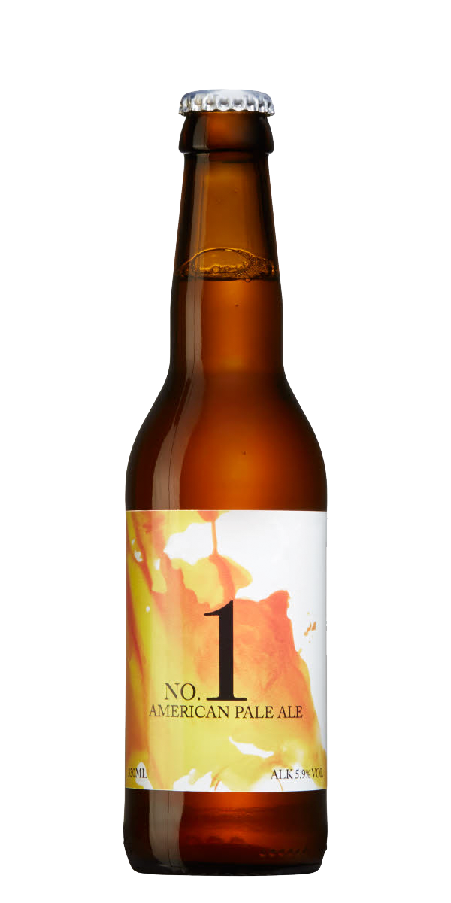

Humlearomatisk smak med tydlig beska, inslag av grapefrukt, ananas, tallbarr och passionsfrukt. Serveras vid 10-12°C som sällskapsdryck eller till rätter av lamm- eller nötkött.

NO.2
I no.2 ökar vi styrkan, beskan och fylligheten från no.1 och går över till den moderna klassikern IPA. Smaker som tall, citrus och en liten större kropp gör detta till en perfekt öl för trevliga middagar eller en kväll med vänner.